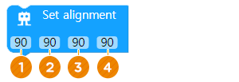

Membuat AsomeBot berjalan lurus
• Sesuaikan sudut setiap motor pada kaki AsomeBot.
• Sesuaikan sudut kaki untuk membiarkan AsomeBot berjalan lurus.
A. Mengapa AsomeBot tidak bisa berjalan lurus
Ini karena sudut dasar dari empat motor AsomeBot tidak benar. Juga, ia tidak dapat berjalan lurus karena tingkat selip di lantai atau pusat gravitasi AsomeBot. Jika demikian, ubahlah sudut kaki AsomeBot sedikit.

B. Jumlah motor
Keempat motor AsomeBot diberi nomor seperti yang ditunjukkan pada gambar berikut, Ketika ingin mengubah sudutnya dengan blok coding , ingat nomor motor dan ubah sudut motor yang diinginkan.

A. Setel alignment/penjajaran (Grup BASIC)
Anda dapat menyesuaikan nilai sudut dari empat motor yang terhubung ke AsomeBot. Sudut berubah dengan menyesuaikan sudut dengan blok Set align dan menambahkan blok Attention, dan kemudian jalankan robot. Pastikan untuk mengingat sudut karena sudut yang diubah perlu diatur ulang jika koneksi terputus.
① Sesuaikan sudut motor No.1. Motor ini pada dasarnya diatur pada 90 derajat.
② Sesuaikan sudut motor No.2. Motor ini pada dasarnya diatur pada 90 derajat.
③ Sesuaikan sudut motor No.3. Motor ini pada dasarnya diatur pada 90 derajat.
④ Sesuaikan sudut motor No.4. Motor ini pada dasarnya diatur pada 90 derajat.

① Sesuaikan sudut setiap motor lebih dari 90 derajat dan sesuaikan kembali menjadi kurang dari 90 derajat. Lihat bagaimana setiap motor mengubah arah.
② Sesuaikan sudut sehingga semua kaki AsomeBot berada di sudut kanan.
B. Attention (Grup BASIC)
Kaki-kaki AsomeBot selaras (Attention).

• Buat program blok-coding yang AsomeBot jalani 3 langkah dan berdiri tegak.
C. Tunda - Delay (Grup ADVANCE)
Tunggu hingga jumlah detik yang ditentukan berfungsi.

① Masukkan jumlah detik untuk menunggu setelah klik.
D. Masalah yang disebabkan ketika sudutnya berbeda
Jika sudut No. 0 dan No. 1 berbeda, jarak bergerak antara kiri dan kanan berbeda.

Jika sudut No. 2 dan No. 3 berbeda, ketinggian mengangkat kakinya berbeda.
① Atur sudut satu kaki untuk mengangkat banyak, seperti gambar di bawah ini, dan biarkan AsomeBot berjalan maju. Bagaimana cara kerjanya?
② Bagaimana Anda mengatur sudut kaki AsomeBot agar berjalan dalam lingkaran seperti di bawah ini?

A. Aturan main
① Sesuaikan sudut keempat motor AsomeBot untuk berjalan lurus.
② Berlomba untuk melihat siapa yang berlari cepat tanpa meninggalkan lapangan sambil berlari ke titik tujuan. (Robot didiskualifikasi jika meninggalkan garis pinggir.)

B. Algoritma
① Sesuaikan sudut sedikit pada 90 derajat untuk membiarkan AsomeBot berjalan lurus.
② Tunda selama 5 detik dengan blok Delay, lalu biarkan robot berjalan 50 langkah ke depan.

C. Mainkan game
Jalankan blok dan mainkan permainan di garis start.